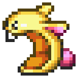

 Secret of Mana
Details
| Playtime | Not Played |
| Last Activity | Never |
| Added | 16/05/2024 17:51:23 |
| Modified | 20/05/2024 22:32:56 |
| Completion Status | Not Played |
| Library | Playnite |
| Source | |
| Platform | Nintendo SNES |
| Release Date | 06/08/1993 |
| Community Score | 84 |
| Critic Score | |
| User Score | 0 |
| Genre | Action RPG |
| Developer | Square |
| Publisher | Square Square Enix |
| Feature | Multiplayer Single Player |
| Links | |
| Tag | |
Description
Rather than using a turn-based battle system like contemporaneous role-playing games, Secret of Mana features real-time battles with a power bar mechanic. The game has a unique Ring Command menu system, which pauses the action and allows the player to make decisions in the middle of battle. An innovative cooperative multiplayer system allows a second or third player to drop in and out of the game at any time. Secret of Mana was directed and designed by Koichi Ishii, programmed primarily by Nasir Gebelli, and produced by veteran Square designer Hiromichi Tanaka.
The game received acclaim for its brightly colored graphics, expansive plot, Ring Command menu system, and innovative real-time battle system. Critics also praised Hiroki Kikuta's soundtrack and the customizable artificial intelligence (AI) settings for computer-controlled allies. Retrospectively, it has been considered one of the greatest games of all time by critics.
The original version was released for the Wii's Virtual Console in Japan by Square's successor Square Enix in September 2008, and for the Wii U's Virtual Console in June 2013. The game was ported to mobile phones in Japan in 2009, and an enhanced port of the game was released for iOS in 2010 and Android in 2014. It was included in the Collection of Mana release for the Nintendo Switch in Japan in June 2017 and North America in June 2019. Nintendo also re-released Secret of Mana in September 2017 as part of the company's Super NES Classic Edition. A full 3D remake was released for the PlayStation 4, PlayStation Vita and Windows in February 2018.